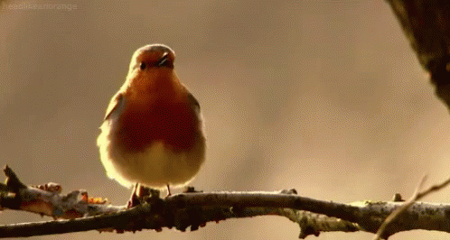

Green Grass
A POEM FOR KIDS.
The dawn is gleeful With the shadow of my beloved. It cheers With the tone of her voice. The sun welcomes the morn, With the painting of my beloved. She flashes the light To show her eternal beauty. The sky is proud With her reddish color. I?m so costly Because of my divine sweetheart. I?ve forgotten all the spheres of life Except for the morn. I?ve forgotten all Except for my divine sweetheart.
ANOTHER KIDS POEM.
A cuckoo bird breaks the silence Of the wintry morning. Although all the people are sleeping, She appeals us, With her happy note, To awaken from the wintry bed. And how to begin a day?s work. She hides her face With a veil of darkness. But she unveils her face In the wintry night. She sings To give the odor And the perfection of the wintry dawn. Let?s praise For the eternal bird. Let?s sing For her divine voice, Who breaks the silence Of the wintry morning. And welcomes the day with her divine singing.